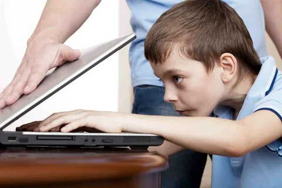

Рабочее времяПонедельник - Пятница: 8 утра - 7 вечера
Местоположение:Нижегородская область, п Сосновское, ул Нижегородская, д 4
Рабочее времяПонедельник - Пятница: 8 утра - 7 вечера
Местоположение:Нижегородская область, п Сосновское, ул Нижегородская, д 4

В настоящее время интернет стал неотъемлемой частью жизни многих подростков, их главным источником информации, средством общения и развлечения. Однако с ростом популярности и доступности интернета, возникают много проблем, а также зависимость от него.
На данной странице вы можете узнать все о зависимости от интернета и как её побороть.
Определить интернет-зависимость может быть непросто, так как она выражается в различных формах и проявлениях. Однако, есть несколько ключевых признаков, которые помогут определить, страдает ли человек этой проблемой.
Во-первых, интернет-зависимым часто трудно ограничивать время, проведенное в сети. Они могут проводить часы перед компьютером или смартфоном, не замечая, как время пролетает. При этом они ощущают сильное беспокойство и тревогу, если им нельзя подключиться к интернету.
Во-вторых, интернет-зависимые часто испытывают сильное желание постоянно проверять социальные сети, электронную почту или другие онлайн-платформы. Они постоянно и без особой необходимости проверяют свои новости, чтобы быть в курсе событий. Их навязчивое поведение создает проблемы в повседневной жизни и общении с окружающими.
Еще одним признаком интернет-зависимости является ухудшение качества реальных отношений. Зависимые от интернета часто забывают о настоящих людях вокруг них и уделяют им меньше внимания. Они предпочитают виртуальные связи, так как они просты в управлении и коммуникации.
Также интернет-зависимые люди могут испытывать различные физические симптомы, такие как головные боли, нарушения сна, покраснение глаз и проблемы со зрением. Это связано с длительным пребыванием за компьютером или смартфоном и недостатком активности и движения.
1 Составьте список занятий, которым мешает ваша интернет-зависимость. Включите в него все занятия, которые вам нравятся и которым вы не можете посвящать время из-за того, что постоянно сидите в интернете. Список нужен не для того, чтобы расстроить вас, — он должен мотивировать вас сокращать время, проводимое в сети.
2 Поставьте перед собой цель проводить в интернете не более определенного количества времени. В отличие от некоторых видов зависимости, зависимость от интернета может быть сложно побороть полным отказом от него, поскольку интернет часто используется в повседневной жизни. Однако можно ограничить время, которое вы тратите на это занятие.
3 Составьте новое расписание. Если интернет отнимает много времени, можно решить эту проблему, заняв себя другими делами. Если у вас станет больше других дел, вам не будет хватать времени на интернет.
4 Используйте внешние отвлекающие факторы. Если кто-то или что-то будет отвлекать вас от интернета, это будет очень полезно.
5 Расставьте приоритеты. Интернет-зависимость можно преодолеть, если чаще вспоминать о более важных делах.
6 Избегайте приложений, сайтов и привычек, которые вы считаете проблемными.Если вы знаете, что в интернете вы часто тратите время на одно и то же, попробуйте полностью отказаться от этого. Онлайн-игры, социальные сети, азартные игры и интернет-шопинг чаще всего вызывают зависимость, но проблемой могут стать любые действия в интернете
7 Используйте карточки с напоминаниями.Визуальные напоминания об интернет-зависимости и вашем желании побороть ее помогут вам тратить меньше времени на интернет. Пишите себе сообщения на карточках или клейких стикерах и оставляйте их на видных местах (на компьютере или возле него, на холодильнике, на столе) либо носите с собой. Вот несколько примеров таких сообщений:
8 Занимайтесь спортом.Физическая нагрузка полезна по нескольким причинам. Спорт укрепляет здоровье, повышает настроение, делает человека уверенным в себе, улучшает сон. Если вы хотите побороть зависимость от интернета, спорт может стать занятием, на которое вы сможете тратить время с пользой.
1 Найдите группу психологической помощи. Все больше и больше людей становятся жертвами интернет-зависимости, и помощь теперь можно получать разными способами. Группы психологической поддержки позволят вам пообщаться с людьми, найти путь решения проблемы и всю необходимую информацию. Узнайте, есть ли в вашем городе группа психологической помощи зависимым от интернета.
2 Запишитесь на прием к психотерапевту. Помощь профессионала, специализирующегося на лечении интернет-зависимости, не будет лишней. Психотерапевт поможет вам сократить время, проводимое онлайн, подскажет, как можно занять себя другими делами, и объяснит вам, какие привычки и внутренние причины поспособствовали формированию зависимости. Поищите контакты психотерапевтов среди знакомых или попросите врача направить вас к специалисту.
3 Попробуйте семейную психотерапию. Интернет-зависимость может негативно сказываться не только на вас, но и на вашей семье (все зависит от конкретной ситуации). В этом случае семейная терапия позволит обеим сторонам понять суть проблемы и начать решать ее. Члены семьи также могут оказывать вам психологическую поддержку, которая поможет вам преодолеть зависимость. Психотерапевт поможет вам продумать направление работы или направит вас к нужному специалисту.
4 Отправляйтесь в центр реабилитации. В связи с усилением проблемы интернет-зависимости некоторые центры реабилитации начали предлагать особые программы. Там вы сможете побыть вдали от инте